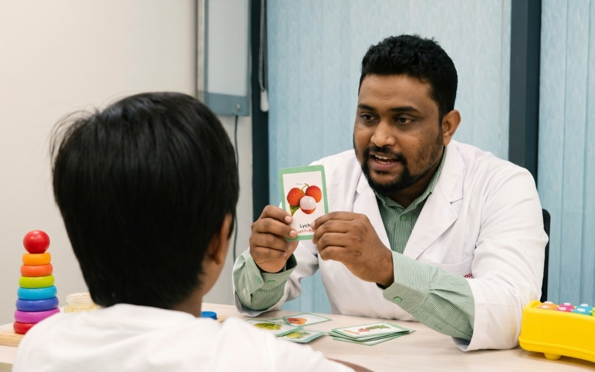
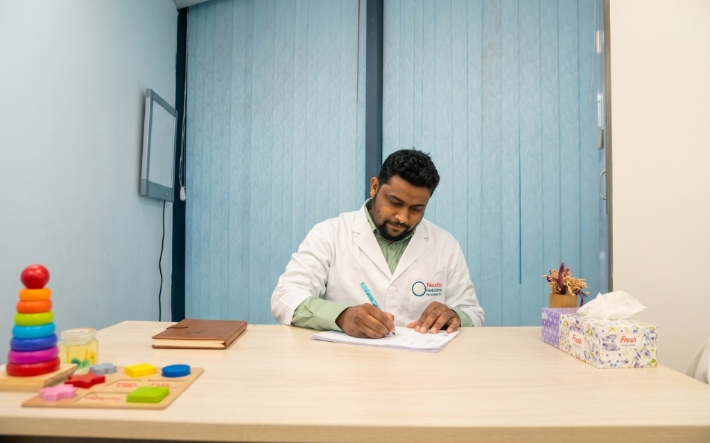

আহাম্মদ শরীফ সাকিব - সিনিয়র স্পিচ অ্যান্ড ল্যাঙ্গুয়েজ থেরাপিস্ট (ঢাকা ও ময়মনসিংহ) | Senior Clinical Speech & Language Therapist
B.Sc. in Speech & Language Therapy
Faculty of Medicine, University of Dhaka (BHPI, CRP)
Senior Lecturer
Department of Speech & Language Therapy, Mymensingh College of Physiotherapy & Health Sciences (MCPHS)
Society of Speech & Language Therapists (SSLT)
Official National Clinical Practice Registration
আহাম্মদ শরীফ সাকিব একজন ক্লিনিক্যাল স্পিচ থেরাপিস্ট, গবেষক এবং শিক্ষক। তিনি দীর্ঘ ক্লিনিক্যাল প্র্যাকটিস ও আধুনিক বৈজ্ঞানিক প্রমাণের ভিত্তিতে শিশুদের ভাষা বিকাশজনিত সমস্যা এবং প্রাপ্তবয়স্কদের স্ট্রোক পরবর্তী বাকশক্তি পুনর্বাসনে নিষ্ঠার সাথে সেবা দিয়ে আসছেন। সুবিধাজনক শিডিউলে অনলাইন কনসালটেশন এবং ঢাকা সিটিতে প্রয়োজনসাপেক্ষে হোম ভিজিট সেবা প্রদান করা হয়।
তিনি যুক্তরাষ্ট্রের The PROMPT Institute কর্তৃক বাংলাদেশে প্রথমবার আয়োজিত আন্তর্জাতিক কর্মশালায় অংশ নেওয়া দেশের মাত্র ৫৮ জন নির্বাচিত বিশেষজ্ঞ স্পিচ থেরাপি চিকিৎসকদের মধ্যে অন্যতম। মোটর স্পিচ জটিলতায় স্পর্শ ও ইন্দ্রিয়নির্ভর (Tactile-Kinesthetic) আধুনিক PROMPT থেরাপির পাশাপাশি তিনি Gestalt Language Processing (GLP) এবং Childhood Apraxia of Speech (CAS) বিষয়ে বিশেষ প্রশিক্ষিত।
চিকিৎসার পাশাপাশি তিনি গবেষণায় সক্রিয়। আমেরিকান কলেজ অব মেডিকেল জেনেটিক্স অ্যান্ড জিনোমিক্স-এর শীর্ষ পিয়ার-রিভিউড জার্নাল Genetics in Medicine (GIM)-এ তাঁর সহ-গবেষণাপত্র প্রকাশিত হয়েছে (DOI: 10.1016/j.gim.2024.101282)। এছাড়া অটিজম শিশুদের মূলধারার সাধারণ শিক্ষায় অংশগ্রহণের ওপর তাঁর অ্যাকাডেমিক গবেষণা রয়েছে।
সিআরপি (CRP, Savar & Mirpur)-এর পেডিয়াট্রিক ও অ্যাডাল্ট নিউরোলজি ইউনিট থেকে শুরু করে নিউরোজেন, সানশাইন এবং ব্লিস হ্যাভেনের মতো স্বনামধন্য প্রতিষ্ঠানে কাজ করার সমৃদ্ধ অভিজ্ঞতা নিয়ে বর্তমানে তিনি ভবিষ্যৎ থেরাপিস্টদের গড়ে তুলতে এমসিপিএইচএস (MCPHS)-এ শিক্ষকতার পাশাপাশি নিবিড় ক্লিনিক্যাল প্র্যাকটিস পরিচালনা করছেন।
ক্লিনিক্যাল কন্ডিশন ও স্পিচ থেরাপি সেবাসমূহ
আন্তর্জাতিক মানদণ্ড এবং বিজ্ঞানসম্মত এভিডেন্স-বেসড ক্লিনিক্যাল পদ্ধতিতে শিশু ও বয়স্কদের সমস্ত জটিলতার পুনর্বাসন।
বাস্তব থেরাপিউটিক মিথস্ক্রিয়া ও পদ্ধতিগত মূল্যায়ন
প্রতিটি রোগীর মানসিক প্রস্তুতি ও বয়স অনুযায়ী আনন্দদায়ক পরিবেশে বৈজ্ঞানিক থেরাপি এবং নিখুঁত কেয়ার প্ল্যানিং

সরাসরি মিথস্ক্রিয়া ও ফ্ল্যাশকার্ড অনুশীলন
শিশুবান্ধব প্রত্যক্ষ ইন্টারঅ্যাক্টিভ ইন্টারভেনশন
ছবি কার্ড (Flashcards), স্পিচ অ্যাক্টিভিটি এবং খেলাচ্ছলে যোগাযোগের মাধ্যমে শিশুর জড়তা দূর করে শব্দ ভাণ্ডার সমৃদ্ধকরণ ও বাক্য গঠনের সক্রিয় অনুশীলন।

পদ্ধতিগত মূল্যায়ন ও বৈজ্ঞানিক প্রেসক্রিপশন
নিখুঁত মূল্যায়ন ও ব্যক্তিগতকৃত প্রেসক্রিপশন
প্রতিটি রোগীর জন্য ক্লিনিক্যাল পর্যবেক্ষণ, ডেভলপমেন্টাল মাইলস্টোন ট্র্যাকিং এবং দীর্ঘমেয়াদি উন্নতির লক্ষ্যে সুনির্দিষ্ট থেরাপি প্ল্যান ও গাইডলাইন প্রণয়ন।
বাংলাদেশে প্রথম PROMPT টেকনিক প্রশিক্ষিত ক্লিনিশিয়ান
সারা দেশের বিভিন্ন প্রান্ত থেকে নির্বাচিত মাত্র ৫৮ জন বিশেষজ্ঞ স্পিচ অ্যান্ড ল্যাঙ্গুয়েজ থেরাপিস্টদের মধ্যে তিনি অন্যতম।
The PROMPT Institute, USA কর্তৃক বাংলাদেশে প্রথমবারের মতো আয়োজিত "Introduction to PROMPT: Technique" আন্তর্জাতিক কর্মশালায় বিশ্বখ্যাত মাস্টার ট্রেইনারদের কাছ থেকে সরাসরি প্রশিক্ষণপ্রাপ্ত। স্পর্শ ও ইন্দ্রিয়নির্ভর (Tactile-Kinesthetic) নিউরোমাসকুলার সহায়তায় কথা বলতে না পারা, উচ্চারণ বিকৃতি ও মোটর স্পিচ জটিলতায় আক্রান্ত শিশুদের স্বাভাবিক শব্দ ফুটিয়ে তোলার অত্যন্ত আধুনিক আন্তর্জাতিক মেথড।
স্পর্শ-ভিত্তিক প্রম্পটিং (Tactile Cues)
চোয়াল, ঠোঁট ও জিহ্বার নির্দিষ্ট স্থানে মৃদু স্পর্শের মাধ্যমে সঠিক আর্টিকুলেশন তৈরি।
মোটর স্পিচ সিকোয়েন্সিং (Coordination)
শব্দ থেকে বাক্যে যাওয়ার সময় ওরোফেসিয়াল পেশির মসৃণ গতি ও টাইমিং স্বাভাবিক করা।
নিউরোমাসকুলার সংযোগ (Neural Pathway)
ব্রেন থেকে ওরোফেসিয়াল স্নায়ুতে সিগন্যাল সংযোগ শক্তিশালী করে স্বাভাবিক শব্দ গঠন।
স্বাভাবিক শব্দ প্রকাশ (Kinesthetic Target)
মুখস্থ অনুকরণ নয়, ইন্দ্রিয়ানুভূতির সাহায্যে শিশু আনন্দের সাথে স্বাভাবিক শব্দ শেখে।
মেডিকেল গবেষণা ও বৈজ্ঞানিক প্রকাশনা
আন্তর্জাতিক পিয়ার-রিভিউড প্রকাশনা ও অ্যাকাডেমিক গবেষণা কর্ম।
Genomic insights from a deeply phenotyped highly consanguineous neurodevelopmental disorders cohort
আমেরিকান কলেজ অব মেডিকেল জেনেটিক্স অ্যান্ড জিনোমিক্স-এর অফিশিয়াল পিয়ার-রিভিউড জার্নাল Genetics in Medicine (GIM)-এ প্রকাশিত।
Perspectives Among Parents of Children with Autism on Inclusive Education
অটিজম বৈশিষ্ট্যসম্পন্ন শিশুদের মূলধারার সাধারণ শিক্ষায় অন্তর্ভুক্তি (Inclusive Education) এবং পারিবারিক দৃষ্টিভঙ্গির ওপর গবেষণা।
An Introduction to Gestalt Language Processing (GLP)
NLA Frameworkন্যাচারাল ল্যাঙ্গুয়েজ একুইজিশন ও ইকোলালিয়ার মাধ্যমে অটিজম শিশুর পূর্ণাঙ্গ ভাববিকাশ।
Overview of Childhood Apraxia of Speech (CAS)
Motor Speechমস্তিষ্ক থেকে মুখমণ্ডলে স্পিচ সিগন্যাল কো-অর্ডিনেশন ও মোটর প্ল্যানিং জটিলতার থেরাপি।
Disability in the Community, CBR and International Development
ICACBR • Aug 2017কুইন্স ইউনিভার্সিটি কানাডা ও সিআরপি পরিচালিত কমিউনিটি-বেসড রিহ্যাবিলিটেশন ও হেলথ পলিসি।
ক্লিনিক্যাল ক্যারিয়ার ও অতীত অভিজ্ঞতা
সিআরপি (CRP), নিউরোজেন, সানশাইন, ব্লিস হ্যাভেন ও কলেজ শিক্ষকতার ধারাবাহিক পথচলা।
Senior Lecturer, Department of Speech & Language Therapy
Mymensingh College of Physiotherapy & Health Sciences (MCPHS)
ভবিষ্যৎ স্পিচ ও ল্যাঙ্গুয়েজ থেরাপিস্টদের অ্যাকাডেমিক ও ক্লিনিক্যাল মেন্টরশিপ।
Senior Clinical Speech & Language Therapist
Bliss Heaven Therapy & Wellness Center, Baridhara
Senior Clinical Speech & Language Therapist
Sunshine Learning Center, Gulshan
Clinical Speech & Language Therapist
NeuroGen Healthcare Limited
Clinical Speech & Language Therapist
Centre for the Rehabilitation of the Paralysed (CRP), Savar
Adult Neurology Outdoor Unit & Stroke Rehabilitation Unit
Clinical Internship
CRP Savar & CRP Mirpur
Paediatric outdoor unit, Adult neurology outdoor, Domiciliary service unit
Research Assistant
Leonard Cheshire-UK Research Study Project of CRP
Our Products
Essential tools for effective therapy.
শিশুর কথা বলা, উচ্চারণ ও ভাষাগত বিকাশের জন্য থেরাপিস্ট-অনুমোদিত বৈজ্ঞানিক খেলনা ও থেরাপি ম্যাটেরিয়ালস
কোন খেলনা বা ম্যাটেরিয়াল আপনার শিশুর জন্য প্রয়োজন?
আপনার শিশুর বয়স ও ডায়াগনোসিস অনুযায়ী সঠিক থেরাপি টুলস বাছাই করতে সরাসরি পরামর্শ ও অর্ডার করুন।
পরামর্শ, হোম ভিজিট ও ফি সংক্রান্ত তথ্য
রোগী ও পরিবারের সুবিধার্থে স্পষ্ট, মার্জিত ও সুনির্দিষ্ট তথ্য।
ভিডিও স্ক্রিনিং ও নিয়মিত ফলো-আপ
দেশের যেকোনো প্রান্ত থেকে অথবা প্রবাসী পরিবারের সদস্যদের জন্য সরাসরি ১-অন-১ ভিডিও পরামর্শ, স্ক্রিনিং ও হোম-গাইডলাইন সেবা।
বাসায় বিশেষায়িত ক্লিনিক্যাল থেরাপি
অটিজম বা অতি-সংবেদনশীল শিশুদের ঘরোয়া পরিবেশে খেলাচ্ছলে ইন্টারভেনশন এবং বয়স্ক শয্যাশায়ী স্ট্রোক/প্যারালাইসিস রোগীদের বেডসাইড রিহ্যাবিলিটেশন।
রোগীর শারীরিক অবস্থা, অবস্থান ও প্রয়োজনীয় সেশন সংখ্যার ওপর ভিত্তি করে হোম ভিজিটের সময়সূচি আলোচনা সাপেক্ষে নির্ধারিত হয়।
অ্যাপয়েন্টমেন্ট বা কনসালটেশনের জন্য আবেদন করুন
নিচের সহজ তথ্যগুলো পূরণ করে সরাসরি হোয়াটসঅ্যাপে পাঠান। থেরাপিস্ট নিজে আপনার সাথে কথা বলে সুবিধাজনক সময় চূড়ান্ত করবেন।
সাধারণ জিজ্ঞাসা ও তথ্য
চিকিৎসা সেবা, টেলি-থেরাপি ও হোম ভিজিট সংক্রান্ত সচরাচর জিজ্ঞাসিত প্রশ্নাবলী।
আপনার কি আরও কিছু জানার আছে?
আপনার রোগীর সুনির্দিষ্ট সমস্যা বা প্রশ্নের উত্তর পেতে সরাসরি থেরাপিস্টকে হোয়াটসঅ্যাপ করুন।